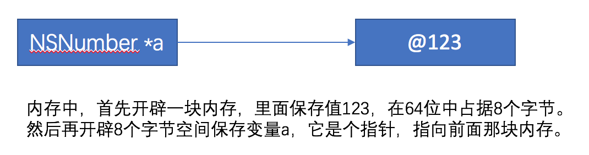
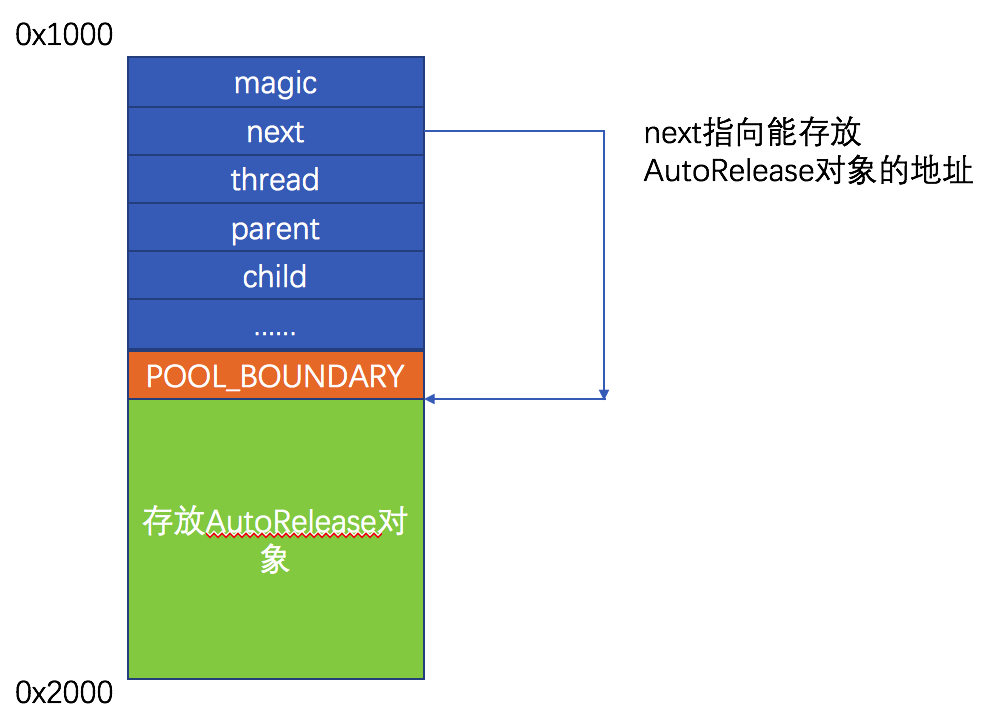

0x01 Tagged Pointer
当我们定义一个变量的时候，比如NSNumber *a = @123，内存中的分布如下

这样就造成了资源浪费，定义一个变量，保存简单的123却用了16个字节，造成了内存碎片；而且为了维护它，还需要额外的开销用引用计数管理它。所以在64系统中，苹果为了解决这样的问题，提出了Tagged Pointer概念。
Tagged Pointer直接将数据保存到指针中，其指针格式变为tag + data的形式，一般用于NSNumber、NSString、NSDate。我们以NSString为例，看下什么是Tagged Pointer。
首先定义变量如下
1 | NSString *a = [NSString stringWithFormat:@"%@", @"123"]; |
我们看到变量a的类型变为NSTaggedPointerString
我们再打印下内存地址看下，很明显变量a的地址由33 + 32 + 31 + 字符串长度组成，其中3表示字符串类型的tag，后面的3、2、1就是保存的值。而变量b的地址很明显是个堆地址。
1 | (lldb) p a |
那么，下面的代码会有什么问题？
1 | @property (nonatomic, copy) NSString *name; |
我们会看到闪退，这是因为多线程环境下，调用setter方法的时候，可能多个线程同时进入到if语句内，导致同一个对象在引用计数只有1的情况下，release方法被重复调用，从而造成闪退。
1 | - (void)setName:(NSString *)name { |
那么同样的，下面的代码会闪退吗？
1 | @property (nonatomic, copy) NSString *name; |
答案是不会，因为self.name此时是Tagged Pointer，不参与引用计数管理，其retainCount可以认为是个无限值，所以任由你release，能闪退算它输。
我们可以通过CFGetRetainCount计算retainCount来证实下。
1 | for (NSInteger i = 0; i < 1000; i++) { |
正是因为这样的特性，同样我们在下面的代码，打印变量a的值还是123，而不是nil。
1 | __weak NSString *a = nil; |
那么，我们看下系统是怎么判断是不是Tagged Pointer。
1 | static inline bool _objc_isTaggedPointer(const void * _Nullable ptr) |
对于宏_OBJC_TAG_MASK定义又如下
1 |
|
所以我们可以看到，当时macOS系统的时候，就拿地址最后一位是不是1来判断是不是taggedPoint；而对于iOS来说，则判断最高位是不是为1，就拿之前例子里的0xa000000003332313为例，0xa表示为1010，最高位显然为1，所以是这个是TaggedPointer。
0x02 weak
首先，看下如下测试代码
1 | int main(int argc, char * argv[]) { |
接着，我们看下其汇编代码
1 | testData`main: |
可以发现，声明__weak后其内部实现过程中调用了objc_initWeak和objc_destroyWeak。但是如果测试例子再修改如下：
1 | int main(int argc, char * argv[]) { |
汇编代码变化如下，发现再给__weak声明的变量重新赋值的时候调用的是objc_storeWeak
1 | testData`main: |
查看源码比较下objc_initWeak和objc_storeWeak的区别
1 | id objc_initWeak(id *location, id newObj) |
虽然都是统一调用storeWeak函数，两者之间只有一个区分，就是objc_initWeak是没有旧值的，而objc_storeWeak是有旧值的，即DontHaveOld和DoHaveOld的区别。
最后会调用objc_destroyWeak函数进行销毁所有指向对象的弱引用对象。销毁的时候，告诉storeWeak函数没有新值。
1 | void objc_destroyWeak(id *location) |
storeWeak
我们直接来到源码，看下其实现
1 |
|
SlideTable
定义如下
1 | struct SideTable { |
具体解释是这样的，在我们的例子中__weak NSObject *obj = [NSObject new];，[NSObject new]新构造了一个对象，这个对象有个SlideTable维护弱引用表，表里保存的就是NSObject *obj变量的地址。
weak_unregister_no_lock
源码先行
1 | void weak_unregister_no_lock(weak_table_t *weak_table, id referent_id, |
具体如何解除引用过程如下，
1 | static void remove_referrer(weak_entry_t *entry, objc_object **old_referrer) |
weak_register_no_lock
还是先看源码
1 | id weak_register_no_lock(weak_table_t *weak_table, id referent_id, |
object_dispose
当一个对象销毁时，会调用object_dispose函数
1 | id object_dispose(id obj) |
最终如果是弱引用对象会来到weak_clear_no_lock函数，里面遍历所有指向此对象的对象地址，然后都置为nil。
1 | void weak_clear_no_lock(weak_table_t *weak_table, id referent_id) |
0x03 Copy
NSString
首先，看下NSString相关的例子
1 | int main(int argc, char * argv[]) { |
我们发现对于不可变的NSString，copy出来的是不可变对象，并且是浅拷贝，因为地址相同；mutableCopy出来的是可变对象，而且是深拷贝，地址都不同了。
NSMutableString
1 | int main(int argc, char * argv[]) { |
对于可变的NSMutableString，copy出来的是不可变对象，并且是深拷贝；mutableCopy出来的是可变对象，但也是深拷贝。
NSArray、NSMutableArray、NSDictionay、NSMutableDictionary其实也类似，具体例子不表述了，总结规律如下：
- 不可变对象的
copy出来的是不可变对象，且是浅拷贝；mutableCopy的是可变对象，且是深拷贝。 - 可变对象的
copy出来的是不可变对象，但是深拷贝；mutableCopy的是可变对象，且也是深拷贝
0x04 NSProxy
在定时器相关的初始化方法中，如果使用的是下面这样的初始化方法，那么由于控制器self本身强引用定时器，而target又会把self传入定时器内部，而在定时器内部又会对self做强引用，这样就造成了循环引用。
1 | self.timer = [NSTimer timerWithTimeInterval:1.f target:self selector:@selector(timerFire) userInfo:nil repeats:YES]; |
解决方法，使用NSProxy，通过这个中间介打破强引用关系，然后再利用消息转发，将方法的实现还是转发回原来的target上。
1 | @interface MyProxy : NSProxy |
那么为什么不是继承NSObject呢，这是因为这样就会走一遍消息转发流程，具体在runtime篇已经讲过，效率没有直接使用NSProxy高。
当然，这样的使用场景也不止在定时器上，别的地方遇到类似的互相强引用，也可以使用这样的方法解决。
0x05 autoreleasepool
我们的示例代码如下
1 | int main(int argc, char * argv[]) { |
转换汇编后，我们可以看到@autoreleasepool实际会被转换为objc_autoreleasePoolPush和objc_autoreleasePoolPop两个函数，而@autoreleasepool中间的代码则被包在这两个函数中间。
1 | testData`main: |
而这两个函数的实现如下
1 | void *objc_autoreleasePoolPush(void) |
继续往下前，需要了解AutoreleasePoolPage的结构，定义如下
1 | class AutoreleasePoolPage |
首先，看到这个结构中有parent和child成员，第一反应这个结构是双向链表。这个结构的大小为PAGE_MAX_SIZE，这是一个宏，其定义如下
1 |
一个AutoreleasePoolPage的大小为4096字节，除了用来存放其成员变量所占用的空间外，剩余的空间都是用来存放autorelease对象的地址。
继续之前的源码分析，首先看下push方法的实现
1 | static inline void *push() { |
push方法里面接着调用了autoreleaseFast，并且传入了一个POOL_BOUNDARY对象，从字面意思理解这个对象是自动释放池的边界，那么它具体指的是什么？我们看到它的宏定义如下，其实就是个nil
1 |
再继续往下看下源代码，首先看看有没有已经创建了的自动释放池，并且如果没满的话调用AutoreleasePoolPage的add方法，如果满了的话就调用autoreleaseFullPage，最后如果没有创建过自动释放池就新建一个，则调用autoreleaseNoPage。
1 | static inline id *autoreleaseFast(id obj) { |
首先看下add方法，直接将POOL_BOUNDARY加入进自动释放池中，并返回POOL_BOUNDARY的地址。
1 | id *add(id obj) { |
接着看autoreleaseFullPage，前面说过自动释放池是双链表形式存在的，所以先遍历表，找到空的链表，然后把对象加入这个池子中；但是如果没子链表，那么就新建一个。
1 | id *autoreleaseFullPage(id obj, AutoreleasePoolPage *page) { |
最后，看下autoreleaseNoPage，也是简单明了的代码，直接新建一个自动释放池，并将其设置为hot，因为自动释放池肯定有很多个，当前活跃的可添加自动释放对象的自动释放池为hot，否则为cold。
1 | id *autoreleaseNoPage(id obj) |
看完push方法源码，我们可以总结，当首次调用AutoreleasePoolPage的push方法时候，会将一个POOL_BOUNDARY入栈，并且会返回其存放的内存地址，这个地址也就是能存放自动释放对象的空间的首地址。所以，后面的autorelease对象的地址存放在这个POOL_BOUNDARY所在地址的后面。

如果4096的空间都被用完了，就会新创建一个AutoreleasePoolPage对象。
看完push方法，接着看下pop方法，核心方法就是releaseUntil
1 | static inline void pop(void *token) { |
接着看releaseUntil方法，遍历池子，在找到POOL_BOUNDARY之前的对象，都调用release方法进行释放。
1 | void releaseUntil(id *stop) { |
总结，最后调用pop方法的时候，会把这个POOL_BOUNDARY所在地址作为参数传进去。然后从整个链表中所存放的最后一个autorelease对象的地址开始，依次往前调用对象的release方法，直到遇到前面传进来的POOL_BOUNDARY所在地址。
如果是嵌套autorelease，因为没遇到一次@autorelease{}都会加入一个POOL_BOUNDARY，所以pop的时候，遇到POOL_BOUNDARY就停止了。所以对于对象来说，在最里面嵌套里的对象最先被释放掉。
我们举个例子，会调用到私有函数_objc_autoreleasePoolPrint来帮助我们完成这个例子，然后我们需要将工程配置成MRC。
1 | extern void _objc_autoreleasePoolPrint(); |
对于释放时机，在@autorelease{}是出了大括号就会进行释放。
那么，我们知道主线程中默认会自动开启一个RunLoop，所以在这种情况下，如果只是调用autorelease方法，释放时机是根据RunLoop的，比如像这样的情况。
1 | - (void)viewDidLoad { |
在主线程中，RunLoop注册了2个Observer，第一个，监听kCFRunLoopEntry，调用objc_autoreleasePoolPush()；第二个，监听了kCFRunLoopBeforeWaiting和kCFRunLoopBeforeExit，前者会调用objc_autoreleasePoolPop()和objc_autoreleasePoolPush()，后者会调用objc_autoreleasePoolPop()。